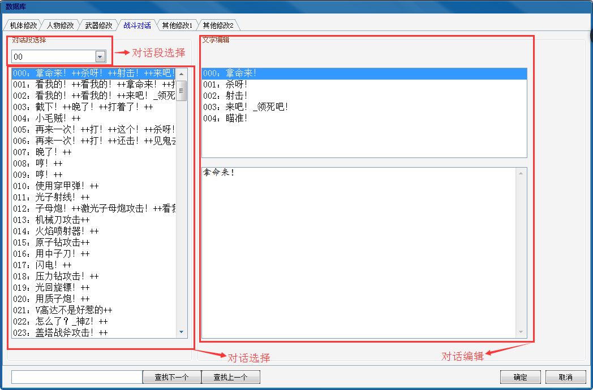
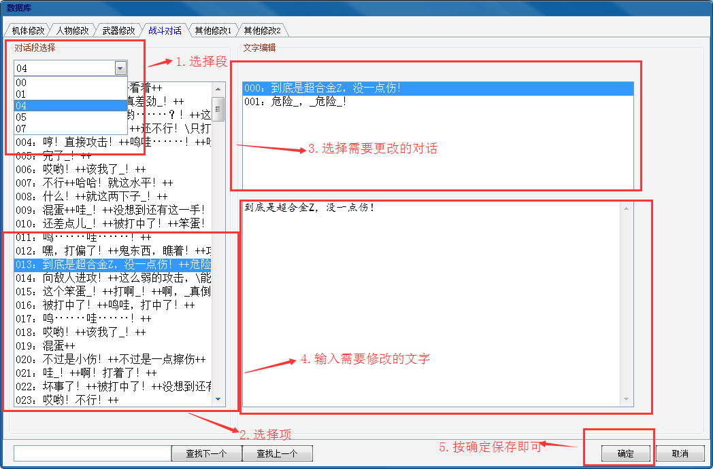

功能区域分布：

选择左侧对话段，用下拉框选择需要修改的对话段，再选择列表框中相应的项，即可在右边显示相应的战斗对白，并且进行修改。每一条对话段可能包含多条对话，这些对话在战斗过程中是随机显示的。在右下角的编辑框中输入文字即可对选中的对话进行修改。例如现在要修改04段的第13条对话中的某条对话，按照顺序依次选择即可，在右下角编辑框中将“到底是超合金Z,没一点伤”更改为其他文字即可完成修改，最后点确定保存：
